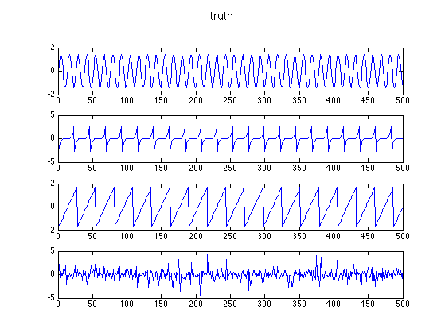
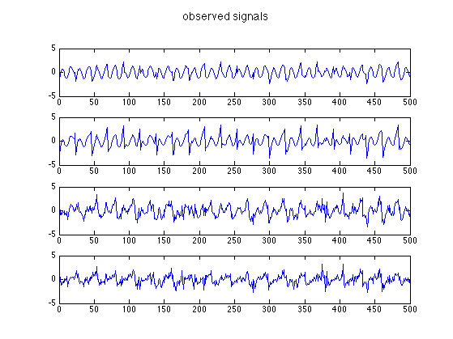
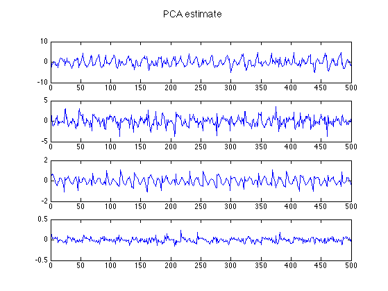

[sigTrue,mixedsig]=demosig();
[icasig, A, W] = fastica(mixedsig);
X = mixedsig';
[B, Z, evals, Xrecon, mu] = pcaPmtk(X, 4);
pcasig = Z';
figure;
for i=1:4
subplot(4,1,i); plot(sigTrue(i,:));
end
suptitle('truth')
printPmtkFigure('icaTruth')
figure;
for i=1:4
subplot(4,1,i); plot(mixedsig(i,:));
end
suptitle('observed signals')
printPmtkFigure('icaObs')
figure;
for i=1:4
subplot(4,1,i); plot(icasig(i,:));
end
suptitle('ICA estimate')
printPmtkFigure('icaIca')
figure;
for i=1:4
subplot(4,1,i); plot(pcasig(i,:));
end
suptitle('PCA estimate')
printPmtkFigure('icaPca')
Number of signals: 4
Number of samples: 500
Calculating covariance...
Dimension not reduced.
Selected [ 4 ] dimensions.
Smallest remaining (non-zero) eigenvalue [ 0.00260319 ]
Largest remaining (non-zero) eigenvalue [ 3.1784 ]
Sum of removed eigenvalues [ 0 ]
[ 100 ] % of (non-zero) eigenvalues retained.
Whitening...
Check: covariance differs from identity by [ 9.17844e-15 ].
Used approach [ defl ].
Used nonlinearity [ pow3 ].
Starting ICA calculation...
IC 1 ........computed ( 8 steps )
IC 2 ......computed ( 6 steps )
IC 3 ....computed ( 4 steps )
IC 4 ..computed ( 2 steps )
Done.
Adding the mean back to the data.
 

